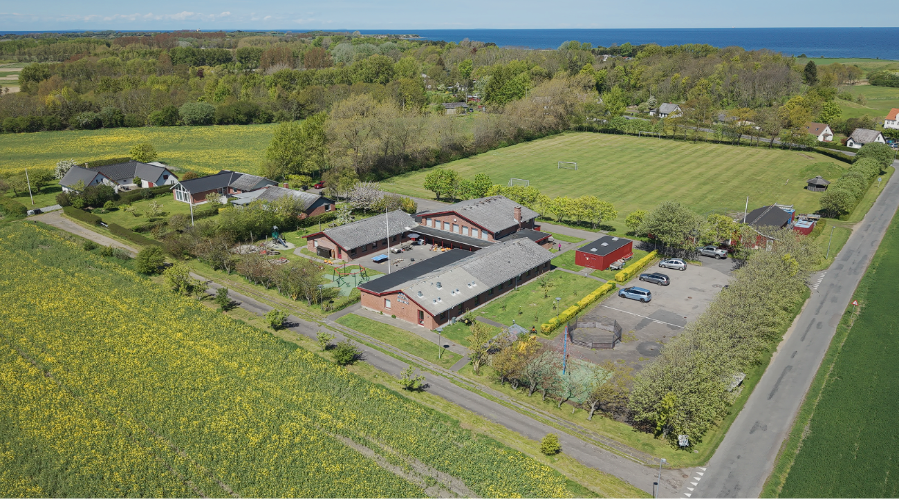
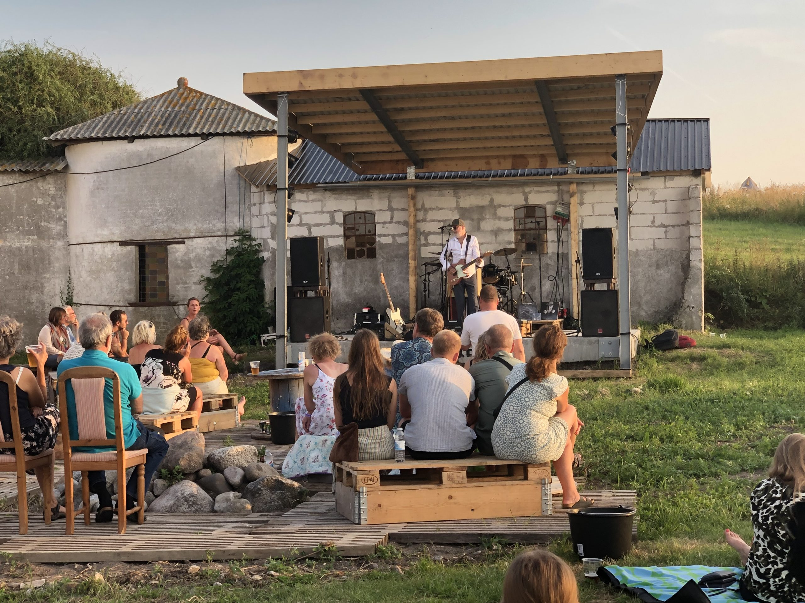

Her på vores lille ø finder du noget helt særligt når det gælder fællesskabet om du står og mangler den
sidste ingrediens til aftensmaden og brugsen har lukket eller lige mangler noget til låns, så er der
altid en nabo der vil hjælpe.
Vi kan lide at bruge tid sammen som naboer her på øen så der bliver ofte holdt begivenheder hvor alle er
velkommen og hyggen er skruet helt op.

På Sejerø skole lægger vi stor vægt på at dannelse og færdigheder går hånd og hånd med trivsel i en tryg
hverdag. Da skolen har et lavt antal elever kan vi sørge for nærvær og rummelighed for det enkelte barn.
På grund af skolens antal elever bliver der undervidst på tværs af klassetrin.
Skolen er delt op i 0. - 3. klasse og 4. - 7. klasse.
Efter 7. klasse tager øens elever på efterskole. I de seneste år har størstedelen af eleverne valgt at
tage på Samsø Efterskole, som vi har et rigtig godt samarbejde med.
Selvom det er mere unikt for de små skoler at have klasser samlet på tværs af klassetrin ser man en unik
dynamik mellem de større og mindre børn hvor de store hjælper med at tage hånd om de mindre.
Sejerø børnehus er en integreret institution midt i Sejerøs dejlige natur. Her arbejder vi med
børnegruppens forskellighed, trivsel, selvstændighed og læring, i form af nærvær, leg, spontane
aktiviteter
Læs mere om både skole og børne hus ved at trykke på knappen nedenunder.

På øen findes der også en håndfuld Foreninger du kan melde dig til hvis du mangler noget mere i fritiden hvoriblandt mange foregår ude i den friske luft.
C/O Svend Åge Nielsen. Tlf.: 39 20 18 30
Hygger bl.a. hver onsdag i sommerhalvåret, det foregår i klubhuset på havnen.
C/O Ronni Nielsen. Tlf.: 29 24 12 40
Her afholder man bl.a. lerdueskydning og fællesjagt i sæsonen.
C/O Brian Freese. Tlf.: 24 83 56 11
Her kan man spille fodbold, både ude og inde, og spille badminton, og hvad man ellers kunne tænke sig. Det foregår nede på skolen. De afholder også Sejerø Runden og sommerfest
Sejerø Esports er også en del af Idrætsforeningen. Her dyrkes ikke kun spil, men også ansvarlig gaming, sociale relationer og digitale kompetencer i trygge rammer.
C/O Helge Nørrevang. Tlf.: 51 91 03 40
Hvis man kan lide at slå til en golfbold, og være sammen, så er det her det foregår.
C/O Brit Tipsmark. Tlf.: 59 59 01 66
Er også støtteforening til Sejerø Kulturhus og afholder div. arrangementer
C/O Finn Andersen. Tlf.: 59 59 01 32
Kan du lide at synge, er dette stedet. Der bliver hygget med kage og kaffe, hver Mandag fra september til april på Idrætshuset.
C/O Agnete Olsen. Tlf.: 59 59 01 15
Afholder bl.a. træf med banko og hygge, onsdag i ulige uger på Restaurant Sejerø på Campingpladsen
C/O Jan G. Laursen. Tlf.: 30 42 28 27
